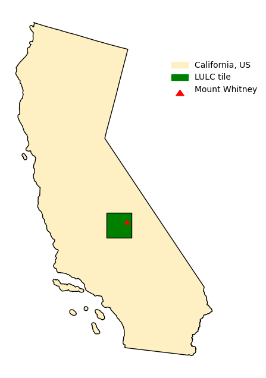
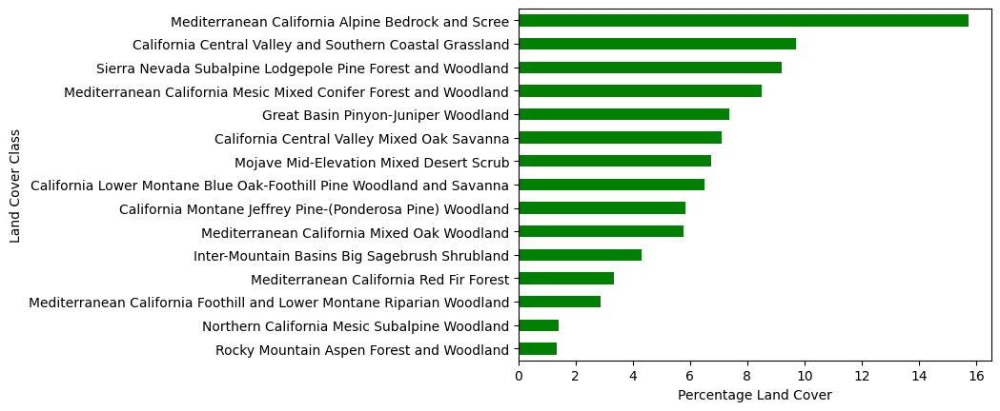
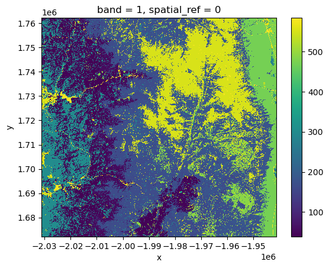
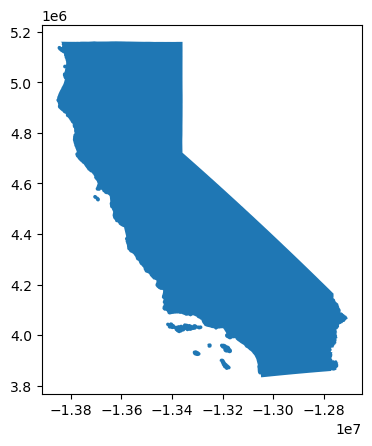

In this notebook an exploration of land cover types around Mount Whitney, California is conducted. A bar graph showing percentages of land cover and a visual representation of where Mount Whitney is located within California will be the deliverables created.
Highlights
Data wrangling and exploration with pandas
Geospatial data wrangling with geopandas and rioxarray
Merging of tabular and vector data
Creating and customizing a map
Creating and customizing a horizontal bar plot with matplotlib
Data
First dataset
A small section of the GAP/LANDFIRE National Terrestrial Ecosystems data for 2011, from the US Geological Survey (USGS). This is a raster file with a 30 m x 30 m pixel resolution. Each cell in the raster has a number representing the type of land cover.
The data was pre-processed in the Microsoft Planetary Computer to show a small region around Mount Whitney, California.
Further information about the dataset can be accessed via the the dataset’s Digital Object Identifier (DOI) link.
Second dataset
A shapefile of CA Geographic Boundaries. This is a subset of the US Census Bureau’s 2016 TIGER database, which only has the state boundary. The URL for this data can be accessed here.
Third dataset
A csv file with the name of the land cover associated with each code.
Final Visualizations
The final visualizations produced in this exploration will be a map for geographic context to indicate where our data around Mount Whitney is located from, and a figure highlighting the dominant land cover/land use types around Mount Whitney.

map

bar plot showing dominant land class types
Let’s Get Coding
Load necessary packages
Code
# import libraries and functions neededimport osimport numpy as npimport pandas as pdimport geopandas as gpdimport matplotlib.pyplot as pltimport matplotlib.patches as mpatches # for creating legendsimport matplotlib.lines as mlines # for creating legend shapesimport xarray as xrimport rioxarray as rioxrfrom shapely.geometry import Polygonfrom shapely.geometry import Pointfrom shapely.geometry import box
Import Land Cover data
I downloaded the .tif file containing land cover information for the area around Mount Whitney, CA and saved this as lulc short for land use/land cover. rioxarray and os allow for the land cover data to be opened as a raster and allows for the exploration of the file, like exploring the projection it is in.
Code
# load in .tif filelulc_fp = os.path.join(os.getcwd(),'data','land_cover.tif')# store .tif file as lulclulc = rioxr.open_rasterio(lulc_fp)# plot the lulc rasterlulc.plot()
<matplotlib.collections.QuadMesh at 0x188e6e9d0>

Import outline of California
I used a URL that links to the California shapefile in order to access the shape of California.
Code
# load ca shapefileca = gpd.read_file("https://data.ca.gov/dataset/e212e397-1277-4df3-8c22-40721b095f33/resource/3db1e426-fb51-44f5-82d5-a54d7c6e188b/download/ca-state-boundary.zip")# look at caca.plot()# update ca to the same crs as lulcca = ca.to_crs('epsg:5070')

Creating a Bounding Box and Point for Mt. Whitney
To create the map showing where the lulc tile is within the state of California and how that related to Mount Whitney we will be creating a bounding box based off of lulc and a point created from coordinates from Mount Whitney.
Code
# create a GeoDataFrame with the lulc bounding boxbbox = gpd.GeoDataFrame({"id":1,"geometry":[box(*lulc.rio.bounds())]})# create geodataframe with mount whitney pointmt_whitney = gpd.GeoDataFrame(geometry=[Point(-118.2923, 36.5785)], crs='epsg:4326')# update mt_whitneys crs to the same crs as lulcmt_whitney = mt_whitney.to_crs('epsg:5070')
Creating a Map to Provide Geographic Context
Now that we have finished loading and updating our data we can explore the spatial relationship of our data. We will use matplotlib to create a map that highlights the location of Mount Whitney in relation to the area of land use/land cover data we have within the state of California.
Create a data frame that will store the percentages covered by each land cover class.
Code
# get the number of pixels per class in lulcpixels = np.unique(lulc, return_counts=True)# initialize dictionary with pixels arrays data pix = {'code' : pixels[0],'number_pixels' : pixels[1], }# create data framepix_counts = pd.DataFrame(pix)# add class namesclasses = pd.merge(pix_counts, class_names, how ='left', on ='code')# calculate the total_pixels from attributes of lulctotal_pixels = classes['number_pixels'].sum()# add the percentage of area covered by each class and round to 8 decimal pointsclasses['percentage_covered'] =round((classes['number_pixels']/total_pixels*100), 8)
Visualization of Land Cover Types
Now that we have calculated how much of our raster is covered by each land cover, let’s create a bar plot to help us visualize the dominant types. Using matplotlib a horizontal bar plot is made that highlights the classes with more than 1% land cover in decreasing order.
Code
# create horixontal bar plot showing the classes with more than 1% land cover in decreasing orderclasses.loc[(classes['percentage_covered']>1)].sort_values(by='percentage_covered', ascending=True).plot.barh(x='class_label', y='percentage_covered', xlabel ="Percentage Land Cover", ylabel ="Land Cover Class", color ="green", legend =False)# -----------------------------# save figureplt.savefig('images/percent_land_cover_plot.png', bbox_inches='tight', dpi=100)plt.show()